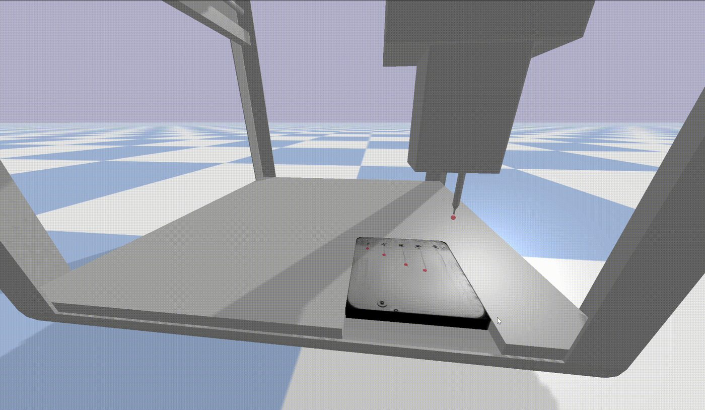

// NPEC · 2023 to 2024
Computer vision and robotics in synergy
A project with NPEC on plant phenotyping, combining computer vision for root segmentation with a simulated robot for precise liquid handling, tuned with reinforcement learning.
My focus was advancing plant root segmentation from images and developing a robotic system for precise liquid handling, to improve phenotyping and automate the process.
